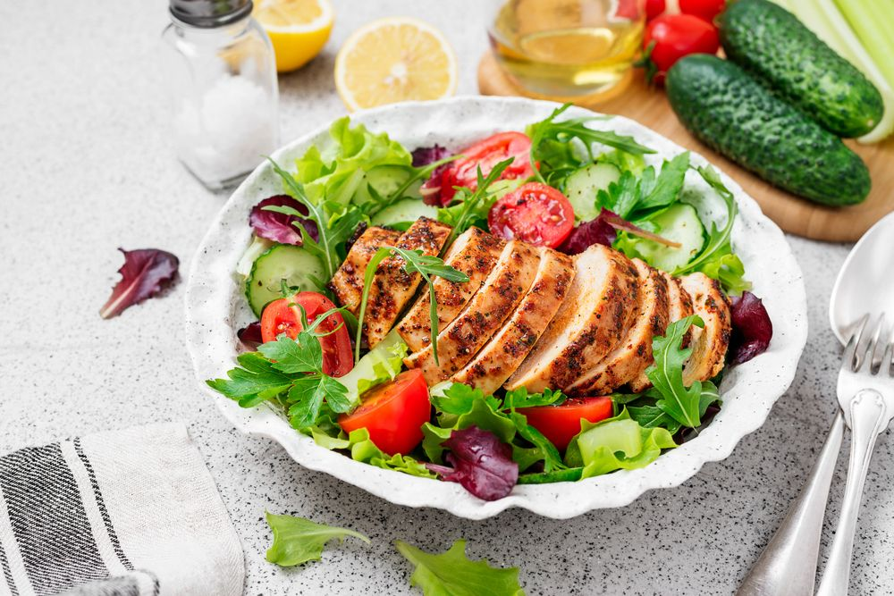
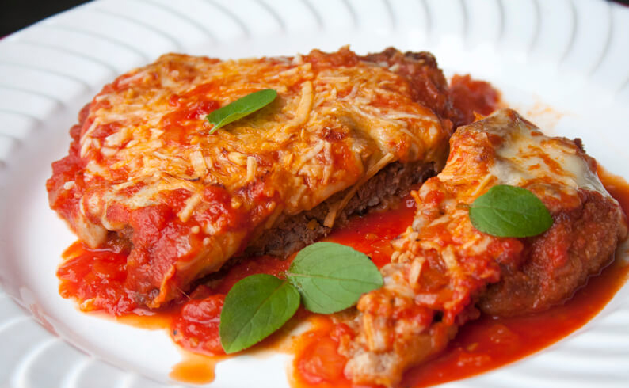
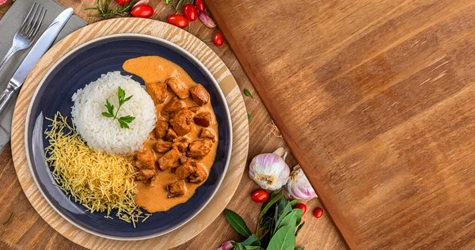

Prato 1 - Salada Caesar
Uma refrescante combinação de verduras, frango e tomates frescos para alegrar seu dia.

Ingredientes:
- 1 pé de alface romana (ou alface americana)
- 200g de peito de frango grelhado (em tiras ou cubos)
- 50g de queijo parmesão (ralado ou em lascas)
- Croutons (pão torrado em cubos)
- Pimenta-do-reino a gosto
Para o Molho Caesar:
- 1/2 xícara de maionese
- 1 colher de sopa de mostarda
- 1 colher de sopa de molho inglês
- 1 dente de alho (picado ou amassado)
- Suco de 1 limão
- Sal e pimenta-do-reino a gosto
- Opcional: 2 colheres de sopa de queijo parmesão ralado
Modo de Preparo:
- Em uma tigela, misture a maionese, a mostarda, o molho inglês, o alho picado e o suco de limão.
- Tempere com sal e pimenta-do-reino a gosto. Reserve.
- Lave as folhas de alface e corte em pedaços grandes. Coloque em uma tigela.
- Adicione o frango grelhado sobre a alface.
- Regue com o molho, adicione os croutons e o queijo parmesão. Misture e sirva imediatamente.
Prato 2 - Parmegiana de Carne
Uma receita clássica brasileira com molho de tomate, carne de qualidade acompanhado de um bom queijo muçarela.

Ingredientes:
- 500g de filé mignon ou contrafilé em bifes
- Sal e pimenta-do-reino a gosto
- 1 xícara de farinha de trigo
- 2 ovos batidos
- 1 xícara de farinha de rosca (ou pão ralado)
- Óleo para fritar
- 300g de molho de tomate (caseiro ou de lata)
- 200g de queijo muçarela fatiado
- Queijo parmesão ralado a gosto
- Salsinha picada para decorar (opcional)
Modo de Preparo:
- Tempere os bifes de carne com sal e pimenta-do-reino a gosto.
- Empane: Passe cada bife na farinha de trigo, depois no ovo batido e, por último, na farinha de rosca.
- Frite os bifes empanados em óleo quente até dourar dos dois lados. Escorra em papel toalha.
- Monte em um refratário: Coloque um pouco de molho de tomate no fundo, adicione uma camada de bifes, cubra com mais molho, queijo muçarela e parmesão. Repita as camadas.
- Leve ao forno preaquecido a 180°C por 15-20 minutos, até o queijo derreter e dourar.
Prato 3 - Strogonoff de frango
Uma delícia irresistível de frango com cobertura cremosa de creme com molho inglês, acompanhado de batata palha e arroz feito com especiarias da casa.

Ingredientes:
- 500g de peito de frango em cubos
- 1 cebola média picada
- 2 dentes de alho picados
- 200g de champignon fatiado (pode ser em conserva)
- 1 colher de sopa de mostarda
- 1 colher de sopa de ketchup
- 200ml de creme de leite
- 2 colheres de sopa de óleo ou manteiga
- Sal e pimenta-do-reino a gosto
- Salsinha picada para decorar
- Arroz branco e batata palha para acompanhar
Modo de Preparo:
- Em uma panela, aqueça o óleo ou manteiga e refogue a cebola e o alho até dourar.
- Adicione o frango em cubos e cozinhe até dourar.
- Acrescente o champignon e refogue por mais alguns minutos.
- Adicione a mostarda e o ketchup, misturando bem.
- Reduza o fogo e adicione o creme de leite, mexendo até aquecer. Tempere com sal e pimenta-do-reino.
Dicas:
- Você pode adicionar outros temperos a gosto, como molho inglês ou ervas finas.
Se preferir um strogonoff mais consistente, pode usar amido de milho diluído em água para engrossar o molho.